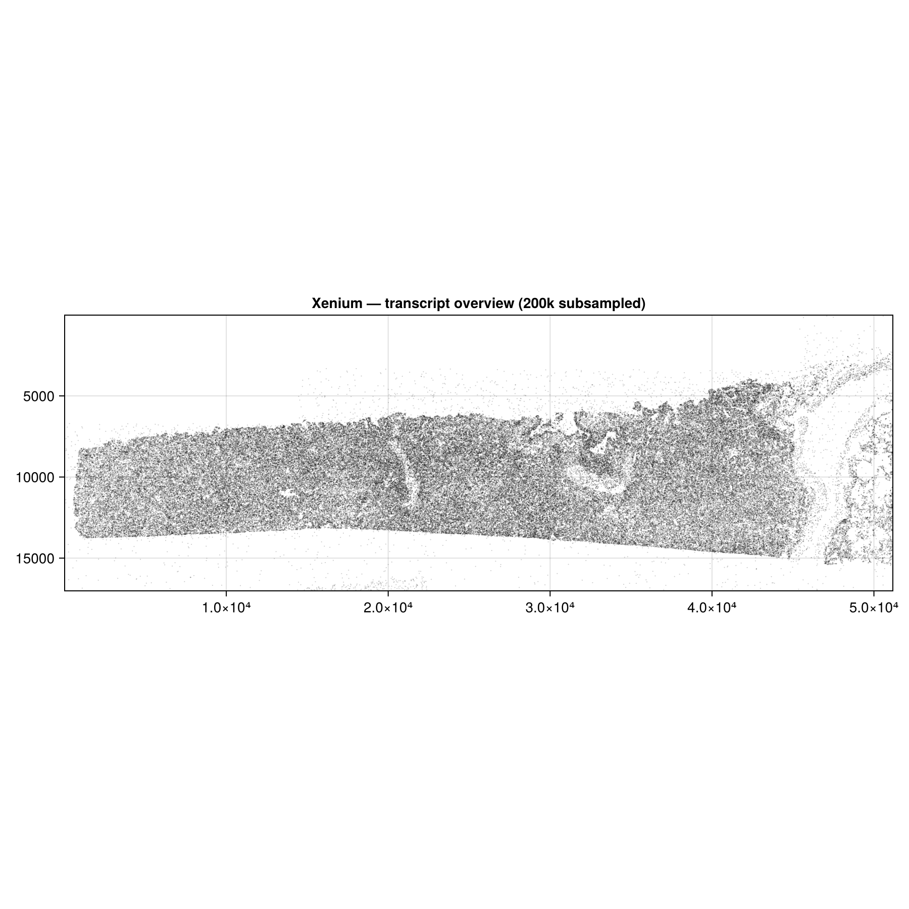
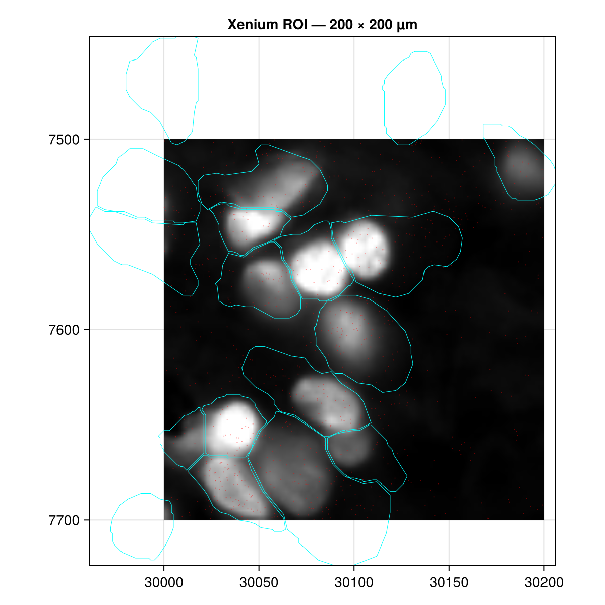

Xenium spatial transcriptomics
This tutorial uses a full Xenium dataset (~5 GB). The code is not run automatically — images below are pre-rendered and committed to the repository. To reproduce them locally, download the dataset and run test/make_fixtures.jl as described in the Creating a subset section.
About the dataset
The example dataset is the 10x Genomics Xenium Mouse Brain Coronal Section, distributed by the SpatialData project as a Python-compatible OME-Zarr store. It contains:
- ~5 million transcripts (
points/transcripts) - Cell boundary polygons (
shapes/cell_boundaries) and nucleus boundaries - 4-channel fluorescence tissue image (
images/morphology_focus) - H&E image (
images/he_image) - Cell segmentation label mask (
labels/cell_labels)
Download
Download the Xenium example store from the SpatialData datasets page. The store is a directory named xenium_ex.zarr; place it wherever is convenient (the path below is arbitrary):
# Adjust path to wherever you downloaded the store
xenium_path = "/path/to/xenium_ex.zarr"Load and inspect
using SpatialOmics
xen = read(SpatialDataZarr(), xenium_path)
# Element inventory
keys(elements(xen))
# Coordinate systems
coord_systems(xen)
# Top 20 expressed genes
tx = points(xen, "transcripts")
top_features(tx, 20)
# Cells with transcript counts
counts = count_per_instance(tx)
sort(collect(values(counts)); rev=true)[1:10] # top 10 cells by countVisualise
A subsampled scatter over the full slide gives a quick overview of tissue layout and transcript distribution.
using CairoMakie
fig = Figure(size=(900, 900))
ax = Axis(fig[1, 1]; aspect=DataAspect(), yreversed=true,
title="Xenium — transcript overview")
n = length(coords(tx))
idx = sort(rand(1:n, 200_000)) # subsample for speed
scatter!(ax, coords(tx)[idx]; markersize=0.3, color=(:black, 0.08))
tightlimits!(ax)
fig
Explore a region of interest
Define a spatial extent and build a lazy view. Each plot verb applies the filter independently — no intermediate copies are made.
ext = SpatialExtent(3500.0, 3700.0, 2800.0, 3000.0; coord_system="global")
roi = view(xen, ext)
fig = Figure(size=(600, 600))
ax = Axis(fig[1, 1]; aspect=DataAspect(), yreversed=true,
xlabel="x (µm)", ylabel="y (µm)")
image!(ax, scaleminmax(channel(images(roi, "morphology_focus"), 1)))
poly!(ax, shapes(roi, "cell_boundaries"); color=:transparent,
strokecolor=:cyan, strokewidth=0.5)
scatter!(ax, points(roi, "transcripts"); markersize=1.5, color=(:red, 0.4))
tightlimits!(ax)
fig
Creating a subset
The committed test fixture at test/data/xenium_small.zarr was created from a 200 µm × 200 µm region of this dataset. The test/make_fixtures.jl script automates this in two passes:
Pass 1 — generate overview figure and pick coordinates:
# Run: julia --project=. test/make_fixtures.jl
# Inspect docs/src/assets/xenium_overview.png
# Fill in XEN_XMIN / XEN_XMAX / XEN_YMIN / XEN_YMAX in the scriptPass 2 — create the fixture:
# After filling in coordinates, re-run the script:
# julia --project=. test/make_fixtures.jl
# This writes test/data/xenium_small.zarr and docs/src/assets/xenium_roi.pngInternally the script uses:
ext = SpatialExtent(XMIN, XMAX, YMIN, YMAX; coord_system="global")
roi = view(xen, ext)
sub = SpatialDataset()
sub["transcripts"] = collect(points(roi, "transcripts"))
sub["cell_boundaries"] = collect(shapes(roi, "cell_boundaries"))
sub["morphology_focus"] = images(roi, "morphology_focus")
write!(sub, "test/data/xenium_small.zarr", SpatialDataZarr())view is lazy — no data is read until collect or the plot verb materialises it. The resulting zarr is in SpatialOmics' native format and is loaded directly by read(SpatialDataZarr(), path) without the full dataset.
Working with the committed fixture
The fixture is small enough to use in offline development and CI:
ds = read(SpatialDataZarr(), joinpath(pkgdir(SpatialOmics), "test", "data", "xenium_small.zarr"))
tx = points(ds, "transcripts")
shp = shapes(ds, "cell_boundaries")
img = images(ds, "morphology_focus")
@show length(coords(tx))
@show nchannels(img), channel_names(img)
@show top_features(tx, 5)